Raspberry Pi에서 PWM출력은 Hardware PWM과 Software PWM 2가지 방법이 있다. (한가지 방법이 더 있는데 GPIO를 이용하여 직접 High와 Low신호를 만드는 것이다. 결과적으로는 Software PWM에 속한다.) Hardware PWM은 12번 Pin을 통해 출력할 수 있으며 하나의 출력만 가능하다. 반면 Software PWM은 출력 Pin을 지정할 수 있으며 동시에 여러개의 PWM을 출력할 수 있다. 그렇다면 Software PWM이 좋은가? 테스트 결과 꼭 그렇지만은 않다. 이유는 Software PWM의 경우 10kHz 보다 높은 주파수를 만들 수 없고 출력 파형이 조금 불안전 하다. 반면 Hardware PWM은 10kHz보다 높은 주파수를 만들 수 있으며 출력파형이 안정적이다. 다음 동영상은 1kHz의 주파수를 각각 Software와 Hardware 방식으로 출력한 것이다. 그냥 봐도 왼쪽의 Software 방식의 파형이 흔들리는 것을 볼 수 있다. 이러한 현상은 주파수가 올라갈 수록 더욱 심하게 나타난다.
Raspberry Pi의 Hardware PWM출력은 12번 핀을 사용한다. WiringPi는 PWM 설정을 위한 몇가지 함수를 제공한다.
참고 사이트: https://projects.drogon.net/raspberry-pi/wiringpi/functions/
다음 공식을 이용하면 원하는 주파수를 만들 수 있다.
Frequency(Hz) = 19.2MHz / divisor / range
위 식의 출처는 구글링 하다 찾은 다음 웹 페이지에 나와 있다.
http://raspberrypi.stackexchange.com/questions/4906/control-hardware-pwm-frequency
위 홈페이지도 그렇고 WiringPi 홈페이지에도 자세한 내용은 BCM2835 ARM 메뉴얼을 보라고 되어있는데 봐도 모르는 관계로 대략 이해한 내용을 적으면 다음과 같다.
편의를 위해 주파수를 다음과 같이 주기로 바꿔보자.
Period(s) = 1 / Frequency(Hz) = 52ns × divisor × range
Raspberry Pi는 기본 19.2MHz를 기본 주파수로 사용하고 있다. 이것을 주기로 바꾸면 52ns가 된다.
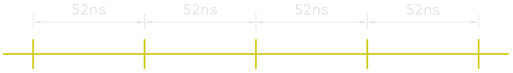최소 Duty Cycle은 기본 주기에서 divisor를 곱한 값이 된다. 즉 divisor 값에 따라 설정 가능한 최소 Duty Cycle이 결정된다.
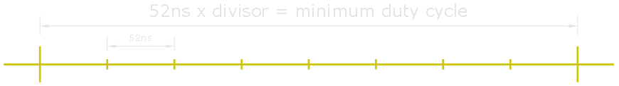최종 주기(주파수)는 최소 Duty Cycle을 몇개 묶느냐에 따라 결정 된다. 이 값이 range가 된다.
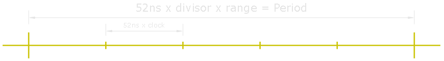최종 파형은 range값에서 몇개를 High로 하느냐에 따라 결정 된다. 이 값이 value가 된다.
간단히 1kHz, Duty Cycle 50%의 파형을 만들어 보자. 위 식에 따르면 다음과 같다.
1000(Hz) = 19.2MHz / divisor / range
divisor × range = 19.2KHz
따라서 다음 2가지 경우가 가능하다.
divisor = 1920, range = 10
divisor = 192, range = 100
Duty Cycle을 50%으로 맞추기 위해서는 range값의 절반을 사용하면 된다. 따라서 value는 각각 5와 50이 된다.
코드로 작성하면 다음과 같다.
hardPwm.c
#include <wiringPi.h>
#include <stdio.h>
int main (void)
{
if (wiringPiSetup() == -1)
{
printf ("Raspberry Pi wiringPi Init Error\n") ;
return 1;
}
pinMode(1, PWM_OUTPUT);
pwmSetMode(PWM_MODE_MS);
pwmSetClock(1920);
pwmSetRange (10) ;
pwmWrite (1, 5);
return 0;
}
다음은 Duty Cycle 50%의 1000Hz, 2000Hz, 3000Hz에 대한 파형이다.
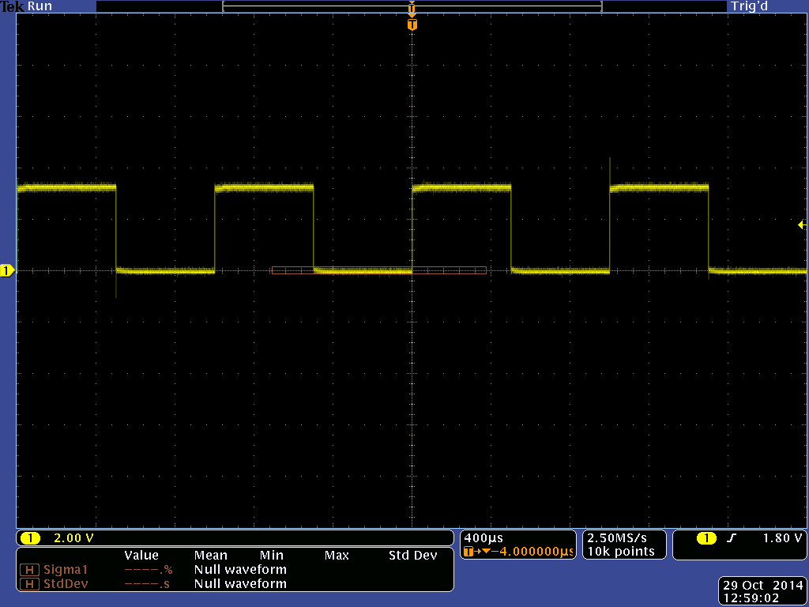 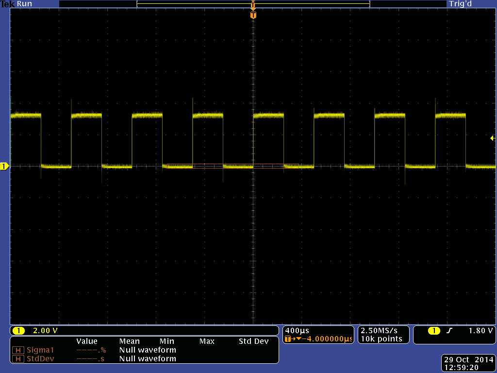Hardware PWM은 같은 신호를 12, 33, 35번 핀에서 동시에 출력한다. 하지만 다른 주파수와 Duty Cycle을 가지는 신호를 만들 수는 없다.
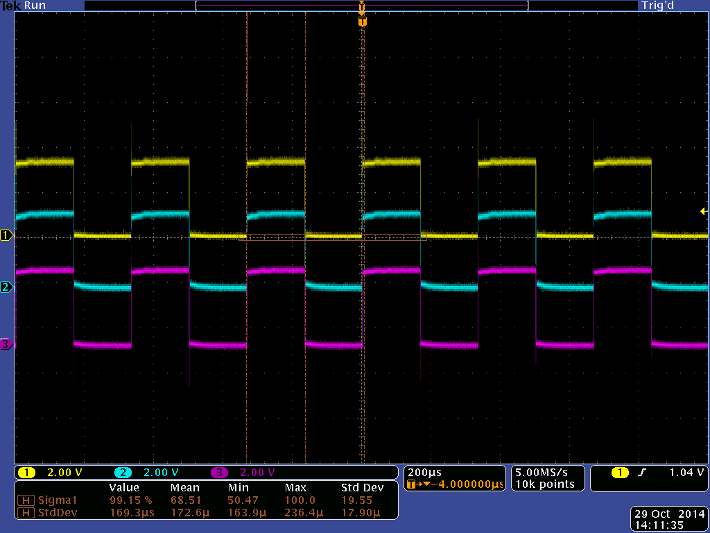Hardware PWM에 비해 Software PWM은 사용자가 출력 핀을 지정할 수 있으며 동시에 여러개의 파형을 만들 수 있다.
Hardware와 마찬가지로 WiringPi는 PWM설정을 위한 몇가지 함수를 제공한다.
참고 사이트: https://projects.drogon.net/raspberry-pi/wiringpi/software-pwm-library
Hardware PWM은 19.2MHz를 기본 주파수로 사용하고 여기에 divisor값에 따라 최소 Duty Cycle이 결정 되었다. Software PWM의 경우 최소 Duty Cycle이 100us로 고정되어 있다. 따라서 다음과 같은 식에 따라 주파수를 계산할 수 있다.
Frequency(Hz) = 10kHz / range
Period(s) = 1 / Frequency = 100us × range
마찬가지로 Software PWM으로 1kHz, Duty Cycle 50%의 파형을 만들어 보자. 위 식에 따르면 range 값은 다음과 같다.
range = 10kHz / 1kHz = 10
50%의 Duty Cycle은 range값의 절반을 사용하면 되므로 value는 5가 된다.
코드로 작성하면 다음과 같다.
softPwm.c
#include <stdio.h>
#include <wiringPi.h>
#include <softPwm.h>
int main(void)
{
if(wiringPiSetup() == -1)
{
printf("Init Error\n");
return 1;
}
int state = softPwmCreate(1, 0, 10);
if(state != 0)
{
printf("PWM Init Error\n");
return 1;
}
softPwmWrite(1, 5);
int input;
scanf("%d", &input);
return 0;
}
다음은 1000Hz, 2000Hz, 3000Hz에 대한 파형이다.
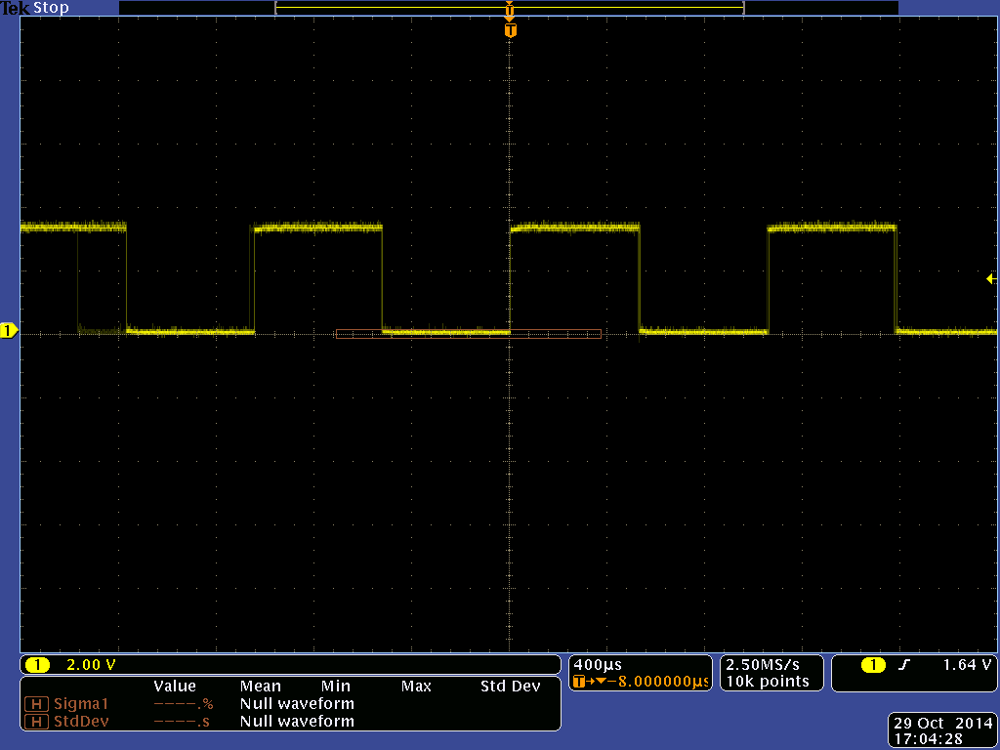 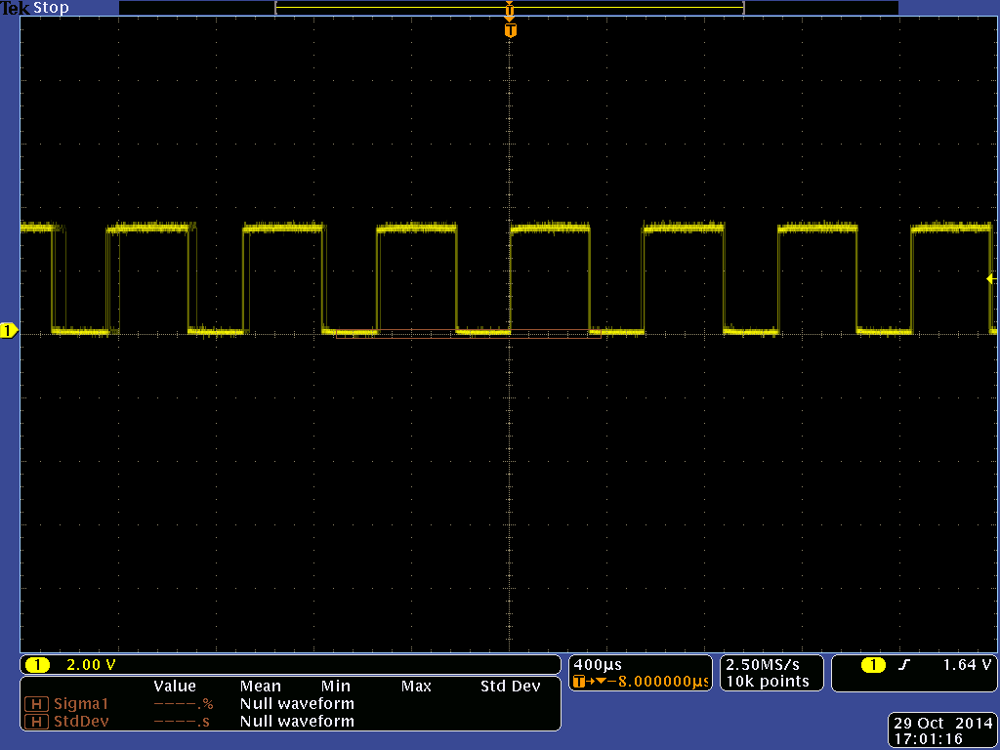 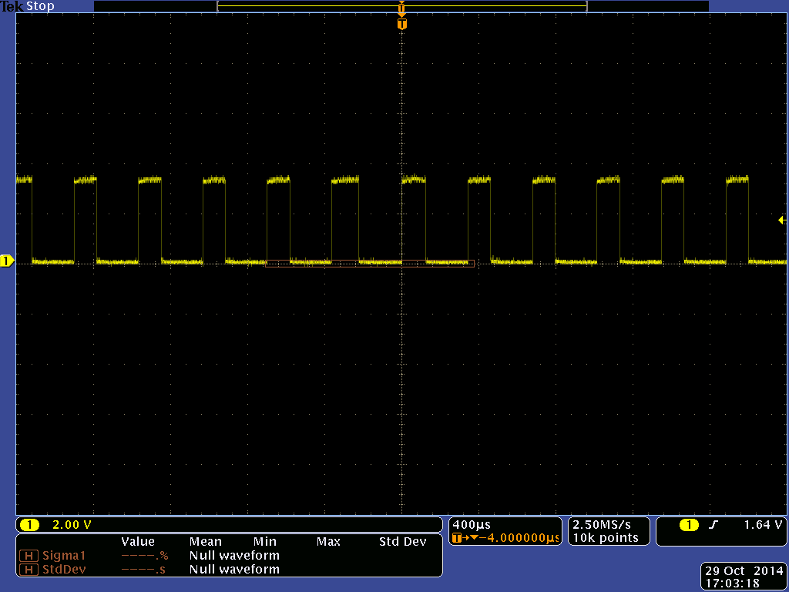여기서 Hardware PWM과 몇가지 차이점이 나타나는데 Software PWM에서는 최소 Duty Cycle이 정해져 있기 때문에 원하는 정밀도의 Duty Cycle를 맞추기 힘들다. 예를 들어 2000Hz의 파형의 경우 range 값은 5결정 되는데 이 경우 50%의 Duty Cycle를 설정하기 위한 value 값은 2.5이지만 실제 설정 가능한 값은 정수 값이므로 2 또는 3만 가능하다. 이 값에 대한 Duty Cycle은 각각 40%와 60%로 2000Hz의 파형에 대해서는 50%의 Duty를 만들 수 없다. 3000Hz의 경우는 주파수 또한 정확하지 않은데 이유는 range가 정수 값이 될 수 없기 때문이다. 참고로 Software PWM의 경우 프로그램이 종료되면 PWM출력이 중단 되므로 프로그램을 계속 유지시켜야 한다. 위 코드에서는 간단히 scanf함수로 프로그램 종료를 막았다.
Software PWM은 다음과 같이 여러개의 PWM을 동시에 출력할 수 있다.
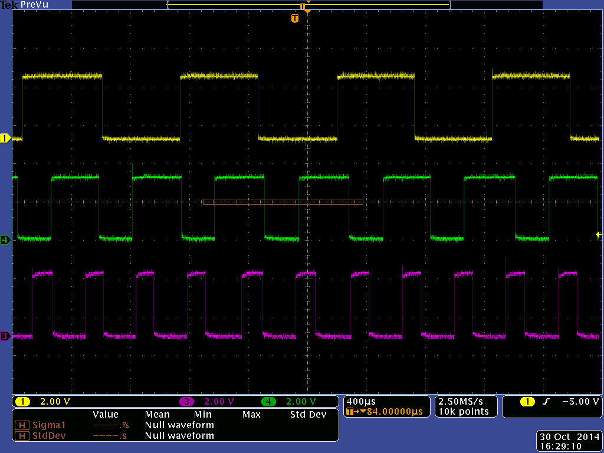WiringPi에서 제공하는 함수를 이용하지 않고 GPIO를 이용하여 직접 파형을 만들 수 있다. 방법은 간단하다. High와 Low를 Delay를 줘서 출력하면 된다. 간단히 1kHz, 50% Duty Cycle 파형을 만들어 보자.
1kHz는 주기가 1ms이므로 50%의 Duty Cycle을 주기 위해서는 High를 0.5ms, Low를 0.5ms로 하면 된다.
gpioPwm.c
#include <stdio.h>
#include <wiringPi.h>
int main(void)
{
if(wiringPiSetup() == -1)
{
printf("Init Error\n");
return 1;
}
pinMode(1, OUTPUT);
for(;;)
{
digitalWrite(1, 1);
delayMicroseconds(500);
digitalWrite(1, 0);
delayMicroseconds(500);
}
}
출력 파형은 다음과 같다.
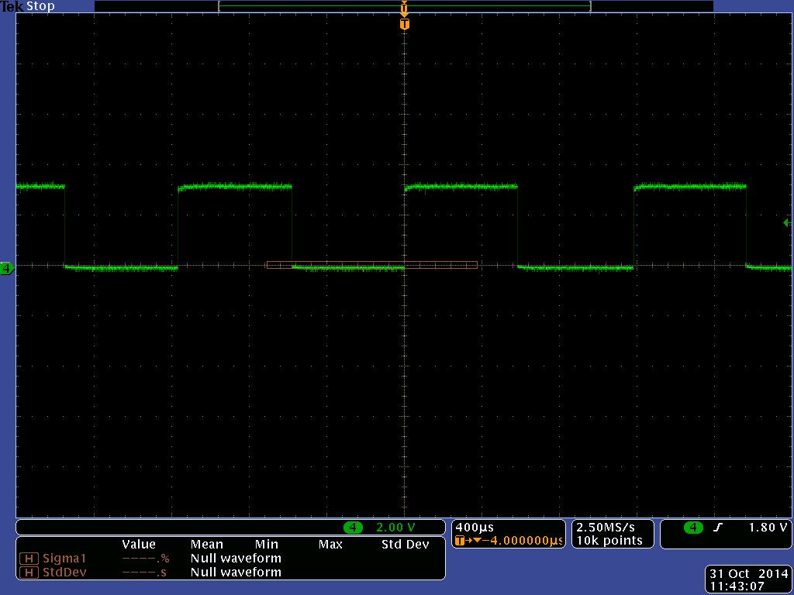다음은 위에서 부터 Hardware, Software, GPIO방식으로 500Hz, Duty 50%의 파형을 만든 것이다. 자세히 보면 Hardware 방식은 꽤 정확한 주파수(1ms주기)를 만들어 내지만 나머지 2개는 약간의 오차를 보인다. GPIO로 만든 주파수는 눈에띄게 차이가 난다.
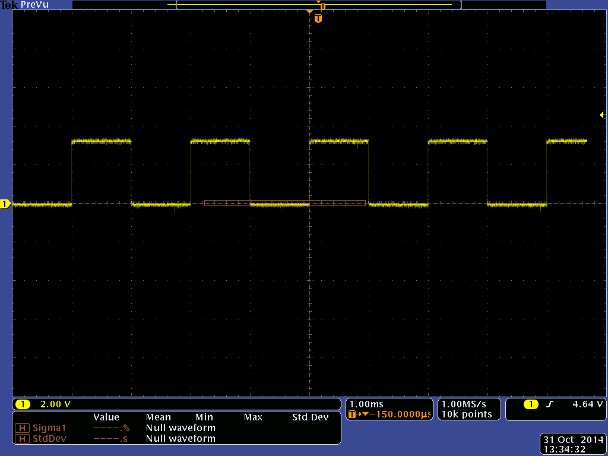 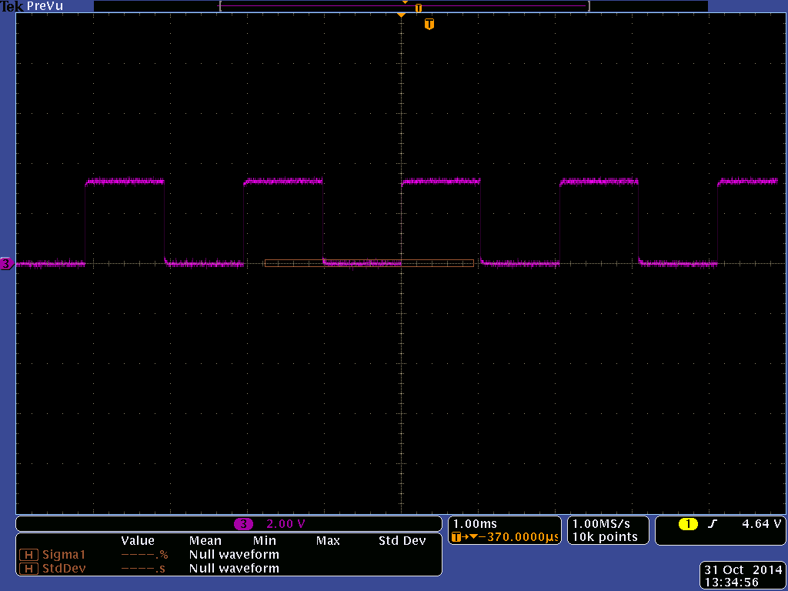 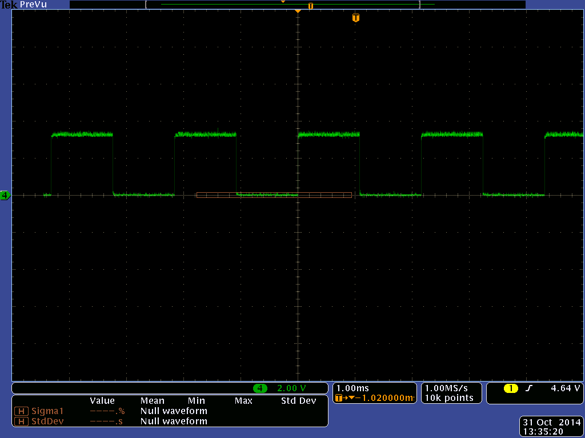마지막으로 GPIO로 직접 만드는 경우는 원하는 만큼의 Pulse를 만들 수 있지만 Hardware와 Software의 경우 Pulse 수를 조정하기 어렵다는 단점이 있다.